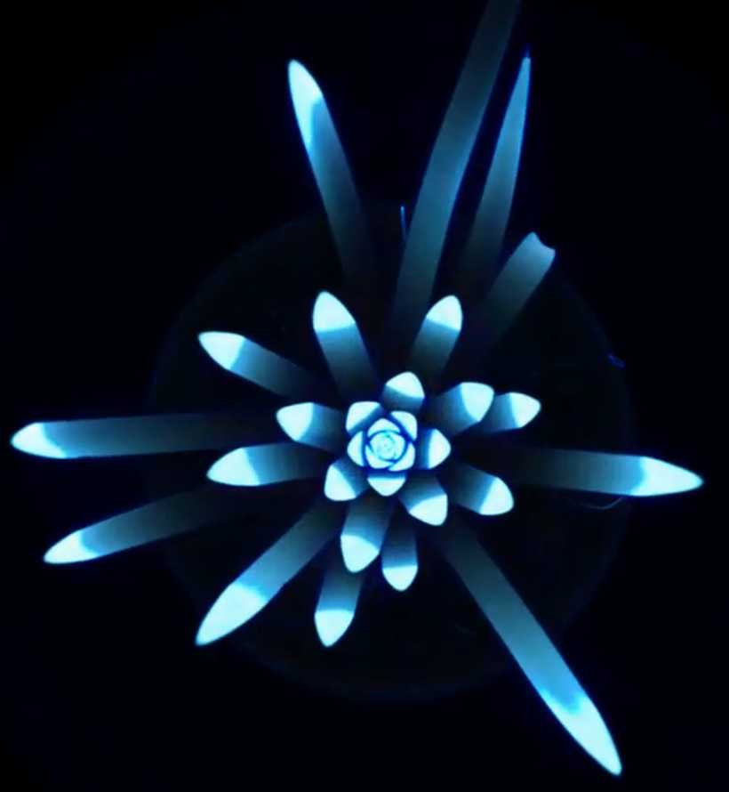
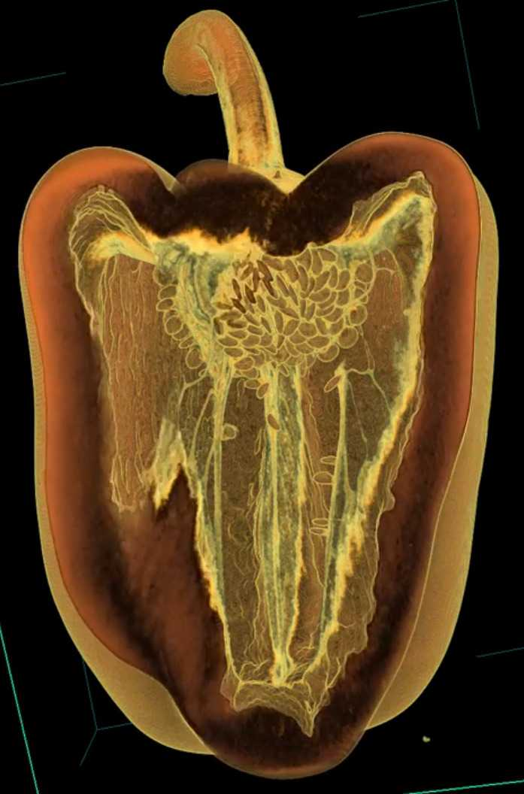
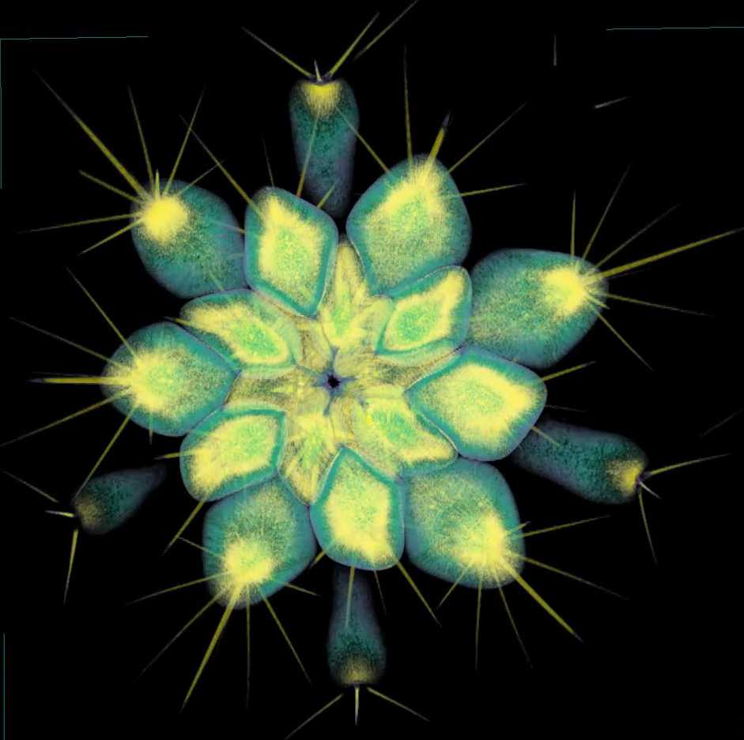
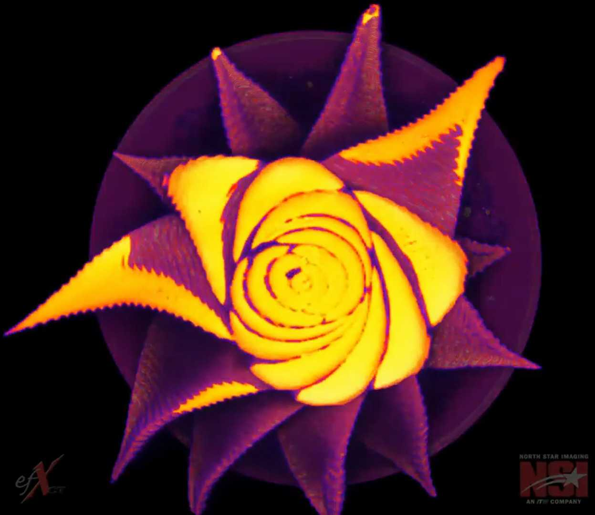

I am a fifth year PhD student. I seek to defend during Spring 2023.
Department of Computational Mathematics, Science and Engineering (CMSE)
Michigan State University
Bachelor (Licenciatura) in Mathematics
Math Department, University of Guanajuato, Mexico
Thesis: Efficient object classification using the Euler characteristic
Advisor: Dr. Antonio Rieser (CONACYT-CIMAT)
A copy of my thesis is available in the webpage of the TDA (Topological Data Analysis) research group at CIMAT, Guanajuato, Mexico.
Else, you can also find a copy here.
MSc. Mario Canul (CIMAT) provided valuable code and computational insight through the whole research.
Slides of my thesis defense can be found here.
Topological data analysis; Euler characteristic; X-ray CT scanning; image processing; plant morphology; barley inflorescence; citrus hybridization
I also have experience working in coding projects with archaeologists, astronomers, and crossword enthusiasts.
See a better description of my projects here.
As a Teaching Assistant
As a Mentor for Undergrads
demeter: using the Topological Data Analysis to quantify the shape and biologyMe back in Nov 2018. Behind me is an amorphophallus titanium. I didn't know it is a single leaf. Credits: Dan Chitwood.
X-Ray CT scan of a barley panicle
Observing apple vasculature
Couple of corn ears

Agave crossed with Manfreda

A cavernous bell pepper!

Quoting Dan C: "Everytime you see a cactus, you should feel awe."

Spiraling with haworthia
{kind=link}
{kind=link}
{kind=link}
{kind=link}